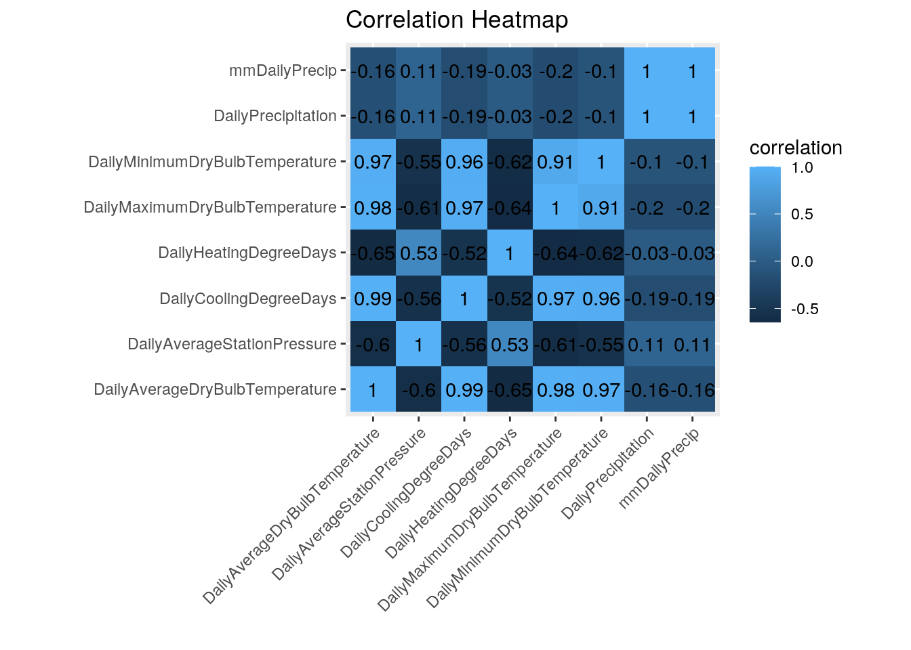
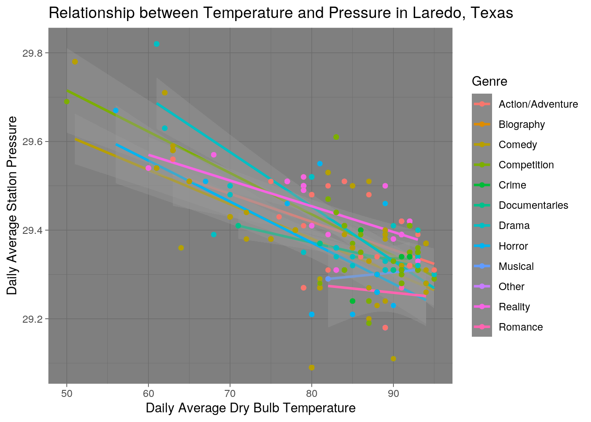
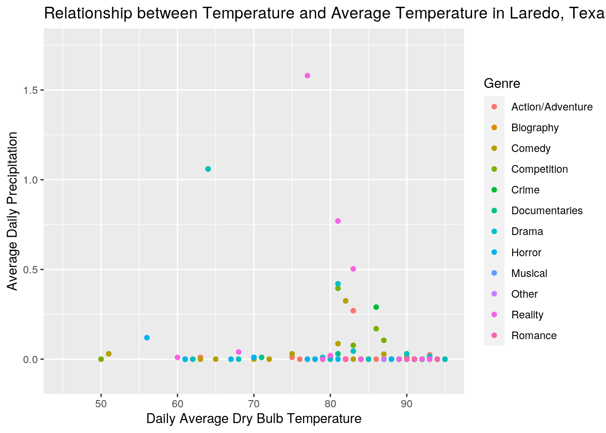
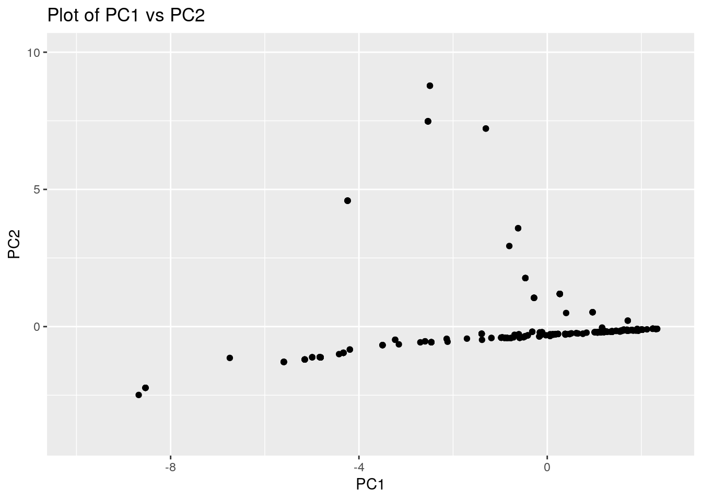
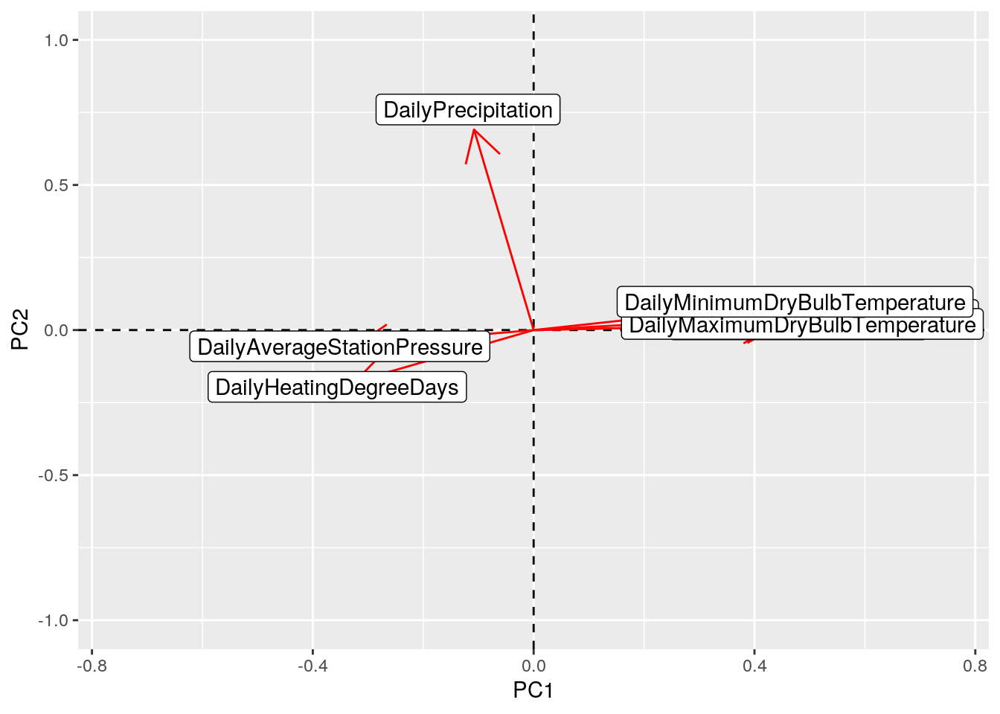

For my project, I was interested in seeing if my Netflix watching habits were affected in the weather in Laredo, TX (my hometown). The weather in Laredo is pretty predictable; it's usually hot, and it rains every once in a while. I wasn't sure which results I could expect to find, but I knew that I would probably watch TV with greater frequency when it was hotter outside.
I downloaded my viewing history from Netflix and decided to add a variable for the genre of each movie or TV show that I had watched. The CSV that I uploaded to R had the date that I watched a certain show/movie, the title, and the genre. The weather data that I downloaded was from the National Centers for Environmental Information. It contained weather information taken from a station at the Laredo International Airport from July 2019 - July 2020. The weather dataset contained variables for the Daily Average Dry Bulb Temperature, which is considered to be the temperature of the air and the "true thermodynamic temperature", according to Wikipedia. The maximum and minimum dry bulb temperature are given. The dataset also includes the air pressure, daily precipitation, daily cooling degree days, and daily heating degree days. Cooling and heating degree days are actually more of a measure of energy consumption. These values indicate the number of degrees either above or below 65 degrees, with cooling degree days being degrees above 65 and heating degree days being degrees below 65. The "cooling" and "heating" refer to the idea that people in a building would want the building to be cooled or heated when the temperature goes above or below 65, respectively. The two datasets were then joined based on date.
Both of the datasets were tidy. However, I needed to clean up the weather dataset quite a bit by removing several columns that were irrelevant (such as variables for snow). The code below shows how I read the CSV in and set the date as a character (because I needed to join on this variable and the date for the Netflix data was also a character). I then filtered based on the report type; "SOD" gave the daily average of all the variables, instead of the hourly data. Next, I selected only the variables that had data. All of the columns removed contained only NAs, but using na.omit() left me with a completely empty dataset. This required me to individually remove every column that was empty. Finally, I cleaned up the value for date, removing the time stamp that was included. I went from a dataset with 124 variable to one with 8.
library(readr)
weather <- read_csv("weather.csv", col_types = cols(DATE = col_character())) #Reading the dataset in
library(tidyverse)
library(dplyr)
weather <- weather %>% filter(REPORT_TYPE == "SOD") #Filtering based on report type
weather_data <- weather %>% select(DATE, contains("Daily"), -contains("Snow"),
-DailyAverageDewPointTemperature, -DailyDepartureFromNormalAverageTemperature,
-DailyAverageRelativeHumidity, -DailyAverageSeaLevelPressure,
-DailyAverageWetBulbTemperature, -DailyAverageWindSpeed,
-DailyDepartureFromNormalAverageTemperature, -DailyPeakWindDirection,
-DailyPeakWindSpeed, -DailySustainedWindDirection, -DailySustainedWindSpeed,
-DailyWeather) #Removing irrelevant columns
weather_data <- weather_data %>% separate(DATE, sep = 10, into = c("Date",
"Other")) #Separating the date and time stamp
weather_data <- weather_data %>% select(-Other) %>% glimpse() #Removing the time stamp## Rows: 818
## Columns: 8
## $ Date <chr> "2018-07-01", "2018-07-02", "2018-07-0…
## $ DailyAverageDryBulbTemperature <chr> "92", "90", "91", "91", "88", "86", "8…
## $ DailyAverageStationPressure <dbl> 29.36, 29.38, 29.38, 29.40, 29.54, 29.…
## $ DailyCoolingDegreeDays <chr> "27", "25", "26", "26", "23", "21", "1…
## $ DailyHeatingDegreeDays <chr> "0", "0", "0", "0", "0", "0", "0", "0"…
## $ DailyMaximumDryBulbTemperature <chr> "104", "103", "104", "104", "99", "95"…
## $ DailyMinimumDryBulbTemperature <dbl> 79, 76, 77, 77, 76, 76, 73, 73, 76, 74…
## $ DailyPrecipitation <chr> "0", "0", "0", "0.01", "0.08", "T", "0…I read in the Netflix history dataset and joined the two datasets by date using full_join. I chose to do a full_join so that I could retain all of the information from both datasets. The two datasets were joined based on date, and using any other join would result in my losing the other variables of one of the datasets. I then removed any NAs from the joined dataset.
ntflx_hist <- read_csv("NetflixViewingHistory-edited.csv", col_types = cols(Date = col_character())) #Reading the dataset in.
joined <- weather_data %>% full_join(ntflx_hist, by = c(Date = "Date")) #Joining based on date
joined2 <- joined %>% na.omit() #Removing NAsNext, I decided to create a new column so that I could distinguish between the movies and the TV shows. This was somewhat difficult, since the titles of the TV shows were not uniform. To denote the season of the show, some programs used "Season", and others used "Collection", "Chapter", or "Series". I separated the title of the program based on these words. I had to download the dataset and make a few adjustments for the Limited Series, whose names were different, in Excel. I read this file back in and made sure that each of the numerical variables were set as numerical in R. I also deleted the row "X1" that was included after I read the dataset back into R. I was then able to further separate the name of the program into Season and Episode. Any movie that I saw would have an "NA" for Episode.
joined3 <- joined2 %>% separate(Title, sep = "Season|Collection|Chapter|Series",
into = c("Title", "Other")) #Separating title into season/episode ('Other')
write.csv(joined3, "joined3.csv") #Writing the CSV so that I could download it
joined3 <- read_csv("joined3.csv", col_types = cols(DailyAverageDryBulbTemperature = col_number(),
DailyAverageStationPressure = col_number(), DailyCoolingDegreeDays = col_number(),
DailyHeatingDegreeDays = col_number(), DailyMaximumDryBulbTemperature = col_number(),
DailyMinimumDryBulbTemperature = col_number(), X1 = col_character(),
DailyPrecipitation = col_number())) %>% glimpse() #Reading the dataset back in and adjusting the columns## Rows: 588
## Columns: 12
## $ X1 <chr> "1", "2", "3", "4", "5", "6", "7", "8"…
## $ Date <date> 2019-07-04, 2019-07-04, 2019-07-04, 2…
## $ DailyAverageDryBulbTemperature <dbl> 92, 92, 92, 92, 92, 92, 92, 93, 93, 93…
## $ DailyAverageStationPressure <dbl> 29.32, 29.32, 29.32, 29.32, 29.32, 29.…
## $ DailyCoolingDegreeDays <dbl> 27, 27, 27, 27, 27, 27, 27, 28, 28, 28…
## $ DailyHeatingDegreeDays <dbl> 0, 0, 0, 0, 0, 0, 0, 0, 0, 0, 0, 0, 0,…
## $ DailyMaximumDryBulbTemperature <dbl> 104, 104, 104, 104, 104, 104, 104, 105…
## $ DailyMinimumDryBulbTemperature <dbl> 80, 80, 80, 80, 80, 80, 80, 80, 81, 81…
## $ DailyPrecipitation <dbl> 0.00, 0.00, 0.00, 0.00, 0.00, 0.00, 0.…
## $ Title <chr> "Stranger Things: Stranger Things 3:",…
## $ Other <chr> "Six: E Pluribus Unum", "Five: The Fla…
## $ Genre <chr> "Action/Adventure", "Action/Adventure"…joined4 <- joined3 %>% separate(Other, sep = ":", into = c("Season",
"Episode")) #Separating season and episode
joined5 <- joined4 %>% select(-X1) #Removing a column that was added by ExcelIt was at this point that I realized I hadn't been in Laredo during the whole time the dataset covers. I sliced out rows that covered the time that I was away from Laredo and removed it from the dataset by doing an anti_join.
stuff <- joined5 %>% slice(142:215) #Cutting out the days that I was not in Laredo
joined6 <- joined5 %>% anti_join(stuff) %>% glimpse() #Doing an anti_join to remove the rows ## Rows: 514
## Columns: 12
## $ Date <date> 2019-07-04, 2019-07-04, 2019-07-04, 2…
## $ DailyAverageDryBulbTemperature <dbl> 92, 92, 92, 92, 92, 92, 92, 93, 93, 93…
## $ DailyAverageStationPressure <dbl> 29.32, 29.32, 29.32, 29.32, 29.32, 29.…
## $ DailyCoolingDegreeDays <dbl> 27, 27, 27, 27, 27, 27, 27, 28, 28, 28…
## $ DailyHeatingDegreeDays <dbl> 0, 0, 0, 0, 0, 0, 0, 0, 0, 0, 0, 0, 0,…
## $ DailyMaximumDryBulbTemperature <dbl> 104, 104, 104, 104, 104, 104, 104, 105…
## $ DailyMinimumDryBulbTemperature <dbl> 80, 80, 80, 80, 80, 80, 80, 80, 81, 81…
## $ DailyPrecipitation <dbl> 0.00, 0.00, 0.00, 0.00, 0.00, 0.00, 0.…
## $ Title <chr> "Stranger Things: Stranger Things 3:",…
## $ Season <chr> "Six", "Five", "Four", "Three", "Two",…
## $ Episode <chr> " E Pluribus Unum", " The Flayed", " T…
## $ Genre <chr> "Action/Adventure", "Action/Adventure"…With my finalized dataset, I created a new variable by converting DailyPrecipitation in inches to millimeters by multiplying the values by 25.4, which is the conversion factor. I also performed my summary statistics before and after grouping by Genre. The average, standard deviation, minimum, maximmum, and variance of each numeric value in the dataset are shown below. This past year was pretty hot in Laredo, with the hottest daily maximum tempeature being 110 degrees Fahrenheit. It also rarely rained, with the average amoung of precipitation being 0.07 inches. The air pressure also did not vary much; standard deviation and variance were both very low. When grouped by genre, a lot of information was created. To summarize a few of the interesting points, the days on which I watched biographies had, on average, the greatest daily average dry bulb temperature, 91 degrees Fahrenheit. Also, days that I spent watching reality TV were days that had the highest average daily precipitation, 0.25 inches.
joined6 <- joined6 %>% mutate(mmDailyPrecip = DailyPrecipitation *
25.4) #Creating a new variable
joined6 %>% summarize_if(is.numeric, c(Mean = mean, Sd = sd,
Min = min, Max = max, Var = var), na.rm = T) %>% pivot_longer(contains("_")) %>%
separate(name, into = c("Variable", "Statistic")) %>% pivot_wider(names_from = "Statistic",
values_from = "value") #Creating summary statistics## # A tibble: 8 x 6
## Variable Mean Sd Min Max Var
## <chr> <dbl> <dbl> <dbl> <dbl> <dbl>
## 1 DailyAverageDryBulbTemperature 83.6 9.66 50 95 93.2
## 2 DailyAverageStationPressure 29.4 0.124 29.1 29.8 0.0155
## 3 DailyCoolingDegreeDays 19.0 8.66 0 30 75.0
## 4 DailyHeatingDegreeDays 0.403 1.69 0 15 2.86
## 5 DailyMaximumDryBulbTemperature 94.5 11.5 55 110 133.
## 6 DailyMinimumDryBulbTemperature 72.3 8.28 43 81 68.6
## 7 DailyPrecipitation 0.0688 0.276 0 1.84 0.0763
## 8 mmDailyPrecip 1.75 7.02 0 46.7 49.2joined6 %>% group_by(Genre) %>% summarize_if(is.numeric, c(Mean = mean,
Sd = sd, Min = min, Max = max, Var = var), na.rm = T) %>%
pivot_longer(contains("_")) %>% separate(name, into = c("Variable",
"Statistic")) %>% pivot_wider(names_from = "Statistic", values_from = "value") #Creating summary summary statistics, grouping by genre## # A tibble: 96 x 7
## Genre Variable Mean Sd Min Max Var
## <chr> <chr> <dbl> <dbl> <dbl> <dbl> <dbl>
## 1 Action/Advent… DailyAverageDryBulbTemp… 86 7.67 63 95 58.8
## 2 Action/Advent… DailyAverageStationPres… 29.4 0.0885 29.2 29.6 0.00784
## 3 Action/Advent… DailyCoolingDegreeDays 21.1 7.40 0 30 54.8
## 4 Action/Advent… DailyHeatingDegreeDays 0.0889 0.417 0 2 0.174
## 5 Action/Advent… DailyMaximumDryBulbTemp… 97.2 9.80 67 110 96.1
## 6 Action/Advent… DailyMinimumDryBulbTemp… 74.5 6.00 59 81 36.0
## 7 Action/Advent… DailyPrecipitation 0.0148 0.0574 0 0.27 0.00329
## 8 Action/Advent… mmDailyPrecip 0.375 1.46 0 6.86 2.12
## 9 Biography DailyAverageDryBulbTemp… 91 NA 91 91 NA
## 10 Biography DailyAverageStationPres… 29.3 NA 29.3 29.3 NA
## # … with 86 more rowsjoined6 %>% group_by(Genre) %>% summarize_if(is.numeric, c(Mean = mean,
Sd = sd, Min = min, Max = max, Var = var), na.rm = T) %>%
pivot_longer(contains("_")) %>% separate(name, into = c("Variable",
"Statistic")) %>% pivot_wider(names_from = "Statistic", values_from = "value") %>%
filter(Variable == "DailyAverageDryBulbTemperature") %>%
select(Mean) %>% arrange(desc(Mean)) #Looking at mean DailyAverageDryBulbTemperature based on genre## # A tibble: 12 x 1
## Mean
## <dbl>
## 1 91
## 2 89.4
## 3 89.2
## 4 88.1
## 5 87.5
## 6 87
## 7 86
## 8 86
## 9 83.9
## 10 81.3
## 11 80.9
## 12 79.6joined6 %>% group_by(Genre) %>% summarize_if(is.numeric, c(Mean = mean,
Sd = sd, Min = min, Max = max, Var = var), na.rm = T) %>%
pivot_longer(contains("_")) %>% separate(name, into = c("Variable",
"Statistic")) %>% pivot_wider(names_from = "Statistic", values_from = "value") %>%
filter(Variable == "DailyPrecipitation") %>% select(Mean) %>%
arrange(desc(Mean)) #Looking at mean DailyPrecipiration based on genre## # A tibble: 12 x 1
## Mean
## <dbl>
## 1 0.246
## 2 0.0829
## 3 0.0553
## 4 0.0471
## 5 0.0264
## 6 0.0148
## 7 0.00733
## 8 0.00677
## 9 0
## 10 0
## 11 0
## 12 0The data required a bit more exploration. I first looked at how many movies/TV shows from each genre I had watched. The genre that I saw the most of was comedy, with 150 shows/movies. My favorite genre is Horror, so I wanted to know more about what I had watched and what the weather was like on days that I watched horror movies/shows. On the days that I watched horror movies, the mean daily average temperature was only 81 degrees, and it rained very little (an average of 0.007 inches). I also had an interest to investigate the days that had the hottest daily maximum dry bulb temperature and found that this day was July 13, 2020. On this day, I watched two incredibly long movies (Inglourious Basterds is 2 1/2 hours long and Fiddler on the Roof is 3 hours long). I then wanted to see how many movies I had watched. The movies contain an "NA" in the episode column, so I created a function to add the number of NAs and selected Episode to count the number of movies. During this time, I watched 131 movies. I grouped the data by date and counted the number of rows for each date to see which day I spent watching the most TV; this date happened to be July 29, 2020. On this day, the average temperature was actually very nice - 84 degrees. The show that I have watched the most of is Parks and Recreation, and on the days that I watched Action/Adventure, Comedy, Competition, and Drama, the maxiumum average temperature was 95 degrees.
joined6 %>% group_by(Genre) %>% summarize(Numberrows = n()) %>%
arrange(desc(Numberrows)) #Counting the number of shows/movies in each genre## # A tibble: 12 x 2
## Genre Numberrows
## <chr> <int>
## 1 Comedy 150
## 2 Competition 118
## 3 Reality 77
## 4 Drama 50
## 5 Action/Adventure 45
## 6 Horror 34
## 7 Crime 16
## 8 Documentaries 15
## 9 Romance 5
## 10 Musical 2
## 11 Biography 1
## 12 Other 1joined6 %>% filter(Genre == "Horror") %>% select(Title) #Listing the horror shows/movies## # A tibble: 34 x 1
## Title
## <chr>
## 1 Cam
## 2 As Above, So Below
## 3 Scream 3
## 4 The Conjuring
## 5 The Crow
## 6 The Texas Chainsaw Massacre
## 7 The Evil Dead
## 8 Candyman
## 9 The Amityville Horror
## 10 Rosemary's Baby
## # … with 24 more rowsjoined6 %>% filter(Genre == "Horror") %>% summarize_if(is.numeric,
c(Mean = mean, Sd = sd, Min = min, Max = max, Var = var),
na.rm = T) %>% pivot_longer(contains("_")) %>% separate(name,
into = c("Variable", "Statistic")) %>% pivot_wider(names_from = "Statistic",
values_from = "value") #Creating summary statistics for horror shows/movies## # A tibble: 8 x 6
## Variable Mean Sd Min Max Var
## <chr> <dbl> <dbl> <dbl> <dbl> <dbl>
## 1 DailyAverageDryBulbTemperature 81.3 10.9 56 94 119.
## 2 DailyAverageStationPressure 29.4 0.140 29.1 29.7 0.0196
## 3 DailyCoolingDegreeDays 17.0 9.43 0 29 88.9
## 4 DailyHeatingDegreeDays 0.735 1.96 0 9 3.84
## 5 DailyMaximumDryBulbTemperature 91.7 13.7 59 107 189.
## 6 DailyMinimumDryBulbTemperature 70.3 8.42 53 81 70.8
## 7 DailyPrecipitation 0.00677 0.0221 0 0.12 0.000489
## 8 mmDailyPrecip 0.172 0.562 0 3.05 0.316joined6 %>% filter(DailyMaximumDryBulbTemperature == max(DailyMaximumDryBulbTemperature)) #Filtering days where the DailyMaximumDryBulbTemperature was the greatest## # A tibble: 7 x 13
## Date DailyAverageDry… DailyAverageSta… DailyCoolingDeg… DailyHeatingDeg…
## <date> <dbl> <dbl> <dbl> <dbl>
## 1 2020-07-13 93 29.3 28 0
## 2 2020-07-13 93 29.3 28 0
## 3 2020-07-13 93 29.3 28 0
## 4 2020-07-13 93 29.3 28 0
## 5 2020-07-13 93 29.3 28 0
## 6 2020-07-13 93 29.3 28 0
## 7 2020-07-13 93 29.3 28 0
## # … with 8 more variables: DailyMaximumDryBulbTemperature <dbl>,
## # DailyMinimumDryBulbTemperature <dbl>, DailyPrecipitation <dbl>,
## # Title <chr>, Season <chr>, Episode <chr>, Genre <chr>, mmDailyPrecip <dbl>joined6 %>% filter(Date == "2020-07-13") %>% select(Title) #Listing the shows/movies I saw when the DailyMaximumDryBulbTemperature was the greatest## # A tibble: 7 x 1
## Title
## <chr>
## 1 The Great British Baking Show:
## 2 Inglourious Basterds
## 3 Fiddler on the Roof
## 4 The Great British Baking Show:
## 5 The Great British Baking Show:
## 6 The Great British Baking Show:
## 7 The Great British Baking Show:NumberMovie <- function(x) sum(is.na(x)) #Creating a function to count the number of NAs
joined6 %>% select(Episode) %>% summarize_all(NumberMovie) #Counting the number of NAs in the Episode column/counting number of movies seen## # A tibble: 1 x 1
## Episode
## <int>
## 1 131joined6 %>% group_by(Date) %>% summarize(NumberDays = n()) %>%
arrange(desc(NumberDays)) #Listing the number of shows/movies I watched on each day## # A tibble: 139 x 2
## Date NumberDays
## <date> <int>
## 1 2020-07-29 16
## 2 2020-04-12 15
## 3 2020-04-29 15
## 4 2020-07-15 11
## 5 2019-07-30 9
## 6 2019-08-15 9
## 7 2019-08-18 9
## 8 2020-04-14 9
## 9 2020-07-06 9
## 10 2020-07-16 9
## # … with 129 more rowsjoined6 %>% filter(Date == "2020-07-29") #Looking into the day where I watched the most TV ## # A tibble: 16 x 13
## Date DailyAverageDry… DailyAverageSta… DailyCoolingDeg…
## <date> <dbl> <dbl> <dbl>
## 1 2020-07-29 84 29.4 19
## 2 2020-07-29 84 29.4 19
## 3 2020-07-29 84 29.4 19
## 4 2020-07-29 84 29.4 19
## 5 2020-07-29 84 29.4 19
## 6 2020-07-29 84 29.4 19
## 7 2020-07-29 84 29.4 19
## 8 2020-07-29 84 29.4 19
## 9 2020-07-29 84 29.4 19
## 10 2020-07-29 84 29.4 19
## 11 2020-07-29 84 29.4 19
## 12 2020-07-29 84 29.4 19
## 13 2020-07-29 84 29.4 19
## 14 2020-07-29 84 29.4 19
## 15 2020-07-29 84 29.4 19
## 16 2020-07-29 84 29.4 19
## # … with 9 more variables: DailyHeatingDegreeDays <dbl>,
## # DailyMaximumDryBulbTemperature <dbl>, DailyMinimumDryBulbTemperature <dbl>,
## # DailyPrecipitation <dbl>, Title <chr>, Season <chr>, Episode <chr>,
## # Genre <chr>, mmDailyPrecip <dbl>joined6 %>% group_by(Genre, Title) %>% summarize(NumberGenre = n()) %>%
arrange(desc(NumberGenre)) #Listing what show/movie I had seen the most## # A tibble: 181 x 3
## # Groups: Genre [12]
## Genre Title NumberGenre
## <chr> <chr> <int>
## 1 Comedy Parks and Recreation: 43
## 2 Competition The Great British Baking Show: 41
## 3 Reality Storage Wars: Northern Treasures: 36
## 4 Reality Yummy Mummies: 20
## 5 Drama Dead to Me: 14
## 6 Crime In the Dark: 13
## 7 Comedy Derry Girls: 12
## 8 Comedy Grace and Frankie: 12
## 9 Comedy GLOW: 10
## 10 Competition Sugar Rush: 10
## # … with 171 more rowsjoined6 %>% group_by(Genre) %>% summarize(Max = max(DailyAverageDryBulbTemperature)) %>%
arrange(desc(Max)) #Looking into what genre I watched when the DailyAverageDryBulbTemperature was the highest## # A tibble: 12 x 2
## Genre Max
## <chr> <dbl>
## 1 Action/Adventure 95
## 2 Comedy 95
## 3 Competition 95
## 4 Drama 95
## 5 Horror 94
## 6 Romance 94
## 7 Musical 93
## 8 Reality 93
## 9 Crime 92
## 10 Documentaries 92
## 11 Biography 91
## 12 Other 87To show the correlation between all of my numeric variables, I created a correlation heatmap. As shown, the variables with the highest correlation are DailyAverageDryBulbTemperature with DailyCooolingDegreeDays (0.98). This makes sense, since cooling degree days are calculated based on the number of degrees above or below 65 degrees.
cormat <- joined6 %>% select_if(is.numeric) %>% cor(use = "pair") #Creating a correlation matrix
tidycor <- cormat %>% as.data.frame %>% rownames_to_column("var1") %>%
pivot_longer(-1, names_to = "var2", values_to = "correlation") #Tidying correlation matrix
tidycor %>% arrange(desc(correlation)) #Correlation Data## # A tibble: 64 x 3
## var1 var2 correlation
## <chr> <chr> <dbl>
## 1 DailyAverageDryBulbTemperature DailyAverageDryBulbTemperature 1
## 2 DailyAverageStationPressure DailyAverageStationPressure 1
## 3 DailyCoolingDegreeDays DailyCoolingDegreeDays 1
## 4 DailyHeatingDegreeDays DailyHeatingDegreeDays 1
## 5 DailyMaximumDryBulbTemperature DailyMaximumDryBulbTemperature 1
## 6 DailyMinimumDryBulbTemperature DailyMinimumDryBulbTemperature 1
## 7 DailyPrecipitation DailyPrecipitation 1
## 8 DailyPrecipitation mmDailyPrecip 1
## 9 mmDailyPrecip DailyPrecipitation 1
## 10 mmDailyPrecip mmDailyPrecip 1
## # … with 54 more rowstidycor %>% ggplot(aes(var1, var2, fill = correlation)) + geom_tile() +
geom_text(aes(label = round(correlation, 2))) + xlab("") +
ylab("") + coord_fixed() + theme(axis.text.x = element_text(angle = 45,
hjust = 1)) + ggtitle("Correlation Heatmap") #Creating correlation heatmap
I was interested to see the relationship between DailyAverageDryBulbTemperature and DailyAverageStationPressure. The graph below shows the linear regression for these values and the negative relationship they have. Each line on the graph represents a genre, and the genre with the strongest negative relationship (steepest slope) appears with Drama movies/shows. The weakest negative relationship appears with Romance movies/shows. Interestingly, it appears that Musicals actually have a slightly positive relationship between pressure and temperature.
joined6 %>% ggplot(aes(DailyAverageDryBulbTemperature, DailyAverageStationPressure)) +
geom_smooth(method = lm, aes(color = Genre)) + geom_point(aes(color = Genre)) +
ggtitle("Relationship between Temperature and Pressure in Laredo, Texas") +
theme_dark() + ylab(label = "Daily Average Station Pressure") +
xlab(label = "Daily Average Dry Bulb Temperature") #Linear regresstion relationship between DailyAverageDryBulbTemperature and DailyAverageStationPressur
The relationship between average DailyPrecipitation and DailyAverageDryBulbTemperature is shown below. In Laredo, it doesn't rain very often (which is evident by the number of points at 0 inches of rain). However, the highest average daily precipitation occurred with a reality TV show. There is a slight negative correlation that can be seen between these two variables, indicating that there is less rain when it is hotter outside.
joined6 %>% ggplot(aes(DailyAverageDryBulbTemperature, DailyPrecipitation,
color = Genre)) + geom_point(aes(y = DailyPrecipitation),
stat = "summary", fun = "mean") + xlim(45, 95) + ylim(-0.1,
1.75) + ggtitle("Relationship between Temperature and Average Temperature in Laredo, Texas") +
ylab(label = "Average Daily Precipitation") + xlab(label = "Daily Average Dry Bulb Temperature") #Scatterplot showing relationship between DailyPrecipitation and DailyAverageDryBulbTemperature
For my data, I chose to run PCA on my numerical variables. As seen in the summary of the loadings, the PCs that were kept were the first two (Comp.1 and Comp.2), since, according to the cumulative proportion, they account for 85% of the variance. Higher scores for PC1 (Comp.1) mean lower station pressure, precipitation and heating degree days, but higher temperature (average, maximum, and minimum) and cooling degree days. Higher scores for PC2 (Comp.2) mean lower cooling degree days and higher precipitation. These relationships makes sense based on the correlation heatmap and the relationships shown in the graphs above.
joined7 <- joined6 %>% select(-Genre, -Episode, -Season) %>%
na.omit() #This captures only the numeric variables and removes any NAs from the data.
joined_nums <- joined7 %>% select_if(is.numeric) %>% scale #This scales the data (divides by the standard deviation)
rownames(joined_nums) <- joined7$Title
joined_PCA <- princomp(joined_nums) #This performs the actual PCA
summary(joined_PCA, loadings = T)## Importance of components:
## Comp.1 Comp.2 Comp.3 Comp.4 Comp.5
## Standard deviation 2.2012309 1.4002508 0.81090404 0.6645311 0.277569190
## Proportion of Variance 0.6069741 0.2456126 0.08237168 0.0553184 0.009651204
## Cumulative Proportion 0.6069741 0.8525867 0.93495841 0.9902768 0.999928018
## Comp.6 Comp.7 Comp.8
## Standard deviation 2.397135e-02 0 0
## Proportion of Variance 7.198203e-05 0 0
## Cumulative Proportion 1.000000e+00 1 1
##
## Loadings:
## Comp.1 Comp.2 Comp.3 Comp.4 Comp.5 Comp.6 Comp.7
## DailyAverageDryBulbTemperature 0.447 0.198 0.457
## DailyAverageStationPressure -0.319 0.697 0.638
## DailyCoolingDegreeDays 0.435 0.325 -0.141 0.492
## DailyHeatingDegreeDays -0.323 -0.178 0.525 -0.750
## DailyMaximumDryBulbTemperature 0.442 0.152 0.655 -0.593
## DailyMinimumDryBulbTemperature 0.430 0.252 -0.745 -0.435
## DailyPrecipitation -0.108 0.691 -0.707
## mmDailyPrecip -0.108 0.691 0.707
## Comp.8
## DailyAverageDryBulbTemperature 0.739
## DailyAverageStationPressure
## DailyCoolingDegreeDays -0.661
## DailyHeatingDegreeDays 0.130
## DailyMaximumDryBulbTemperature
## DailyMinimumDryBulbTemperature
## DailyPrecipitation
## mmDailyPrecipThe data, with respect to PC1 and PC2, is shown in the graph below. The data contains many points that are higher for PC1 and around zero for PC2. There are a few points that are extreme for PC1 (on the lower end) and PC2 (on the higher end); these points are investigated later.
joined7df <- data.frame(Date = joined7$Date, PC1 = joined_PCA$scores[,
1], PC2 = joined_PCA$scores[, 2]) #this creates a dataframe from the PCA data
joined7df %>% ggplot(aes(PC1, PC2)) + geom_point() + ggtitle("Plot of PC1 vs PC2") +
xlim(-10, 2.5) + ylim(-4, 10) #Plot of PC1 and PC2
The graph below shows the variables that contribute to both PCs. You can see, that the main driver for PC2 is DailyPrecipitation, while temperature (average, minimum, and maximum) contribute to a posisive PC1 score.
joined_PCA$loadings[1:7, 1:2] %>% as.data.frame %>% rownames_to_column %>%
ggplot() + geom_hline(aes(yintercept = 0), lty = 2) + geom_vline(aes(xintercept = 0),
lty = 2) + ylab("PC2") + xlab("PC1") + geom_segment(aes(x = 0,
y = 0, xend = Comp.1, yend = Comp.2), arrow = arrow(), col = "red") +
geom_label(aes(x = Comp.1 * 1.1, y = Comp.2 * 1.1, label = rowname)) +
ylim(-1, 1) + xlim(-0.75, 0.75) #Plot of loadings
The extreme points shown in the Plot of PC1 vs. PC2 are investigated here. The points that are on the extreme low end of PC1 belong to several episodes of the show "The End of the F-ing World", "Jenny Slate:Stage Fright", and an episode of "The Great British Baking Show: The Holidays". The days that I watched these shows were cold, with high heating degree days and low precipitation. The points that are on the extreme high end of PC1 correspond with several episodes of a ridiculous Australian reality TV show called "Yummy Mummies" that I binged over the course of several days. On these days, there was quite a lot of rain and the temperatures were low (with zero heating degree days).
joined_PCA$scores[, 1:4] %>% as.data.frame %>% top_n(-3, Comp.1) #Exploring the lowest three PC1 scores## Comp.1 Comp.2 Comp.3 Comp.4
## The.End.of.the.F...ing.World. -8.534219 -2.231747 3.591325 -3.510284
## The.End.of.the.F...ing.World..1 -8.534219 -2.231747 3.591325 -3.510284
## The.End.of.the.F...ing.World..2 -8.534219 -2.231747 3.591325 -3.510284
## Jenny.Slate..Stage.Fright -8.534219 -2.231747 3.591325 -3.510284
## The.Great.British.Baking.Show..Holidays. -8.677936 -2.491296 3.258879 -4.374384joined7 %>% filter(Title %in% c("The End of the F***ing World:",
"Jenny Slate: Stage Fright", "The Great British Baking Show: Holidays:")) #Exploring days with lowest PC1 scores## # A tibble: 11 x 10
## Date DailyAverageDry… DailyAverageSta… DailyCoolingDeg…
## <date> <dbl> <dbl> <dbl>
## 1 2019-11-08 51 29.8 0
## 2 2019-11-08 51 29.8 0
## 3 2019-11-08 51 29.8 0
## 4 2019-11-08 51 29.8 0
## 5 2019-11-09 62 29.7 0
## 6 2019-11-09 62 29.7 0
## 7 2019-11-09 62 29.7 0
## 8 2019-11-10 65 29.5 0
## 9 2019-11-10 65 29.5 0
## 10 2019-11-10 65 29.5 0
## 11 2019-11-14 50 29.7 0
## # … with 6 more variables: DailyHeatingDegreeDays <dbl>,
## # DailyMaximumDryBulbTemperature <dbl>, DailyMinimumDryBulbTemperature <dbl>,
## # DailyPrecipitation <dbl>, Title <chr>, mmDailyPrecip <dbl>joined_PCA$scores[, 1:4] %>% as.data.frame %>% top_n(3, Comp.2) #Exploring the highest three PC2 scores## Comp.1 Comp.2 Comp.3 Comp.4
## Yummy.Mummies. -2.492453 8.778635 0.9790025 0.01233305
## Yummy.Mummies..1 -2.492453 8.778635 0.9790025 0.01233305
## Yummy.Mummies..10 -2.533421 7.480994 0.6880809 0.13133720
## Yummy.Mummies..11 -2.533421 7.480994 0.6880809 0.13133720
## Yummy.Mummies..12 -2.533421 7.480994 0.6880809 0.13133720
## Yummy.Mummies..13 -2.533421 7.480994 0.6880809 0.13133720
## Yummy.Mummies..14 -2.533421 7.480994 0.6880809 0.13133720
## Yummy.Mummies..15 -2.533421 7.480994 0.6880809 0.13133720
## Yummy.Mummies..16 -2.533421 7.480994 0.6880809 0.13133720joined7 %>% filter(Title == "Yummy Mummies:") #Exploring days with highest PC2 scores. ## # A tibble: 20 x 10
## Date DailyAverageDry… DailyAverageSta… DailyCoolingDeg…
## <date> <dbl> <dbl> <dbl>
## 1 2020-05-29 79 29.5 14
## 2 2020-05-29 79 29.5 14
## 3 2020-05-30 79 29.5 14
## 4 2020-05-30 79 29.5 14
## 5 2020-05-30 79 29.5 14
## 6 2020-05-30 79 29.5 14
## 7 2020-05-30 79 29.5 14
## 8 2020-05-30 79 29.5 14
## 9 2020-05-30 79 29.5 14
## 10 2020-05-30 79 29.5 14
## 11 2020-05-31 77 29.5 12
## 12 2020-05-31 77 29.5 12
## 13 2020-05-31 77 29.5 12
## 14 2020-05-31 77 29.5 12
## 15 2020-05-31 77 29.5 12
## 16 2020-05-31 77 29.5 12
## 17 2020-05-31 77 29.5 12
## 18 2020-06-01 79 29.5 14
## 19 2020-06-01 79 29.5 14
## 20 2020-06-01 79 29.5 14
## # … with 6 more variables: DailyHeatingDegreeDays <dbl>,
## # DailyMaximumDryBulbTemperature <dbl>, DailyMinimumDryBulbTemperature <dbl>,
## # DailyPrecipitation <dbl>, Title <chr>, mmDailyPrecip <dbl>...